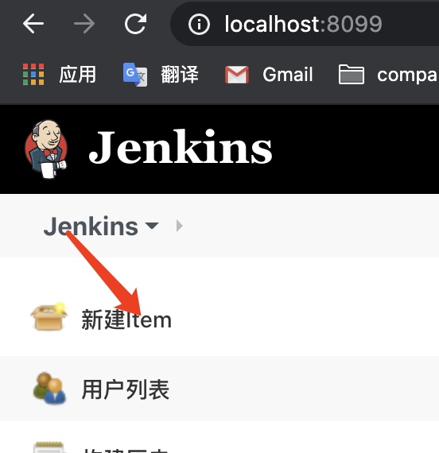
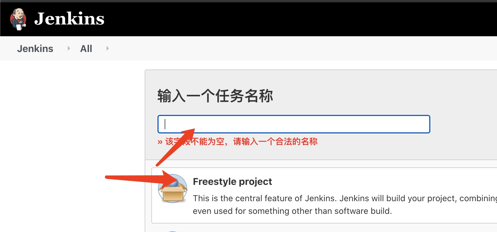
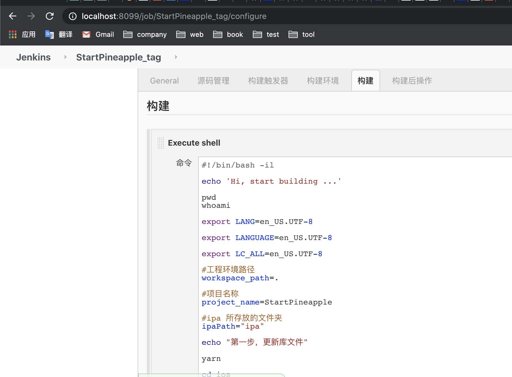
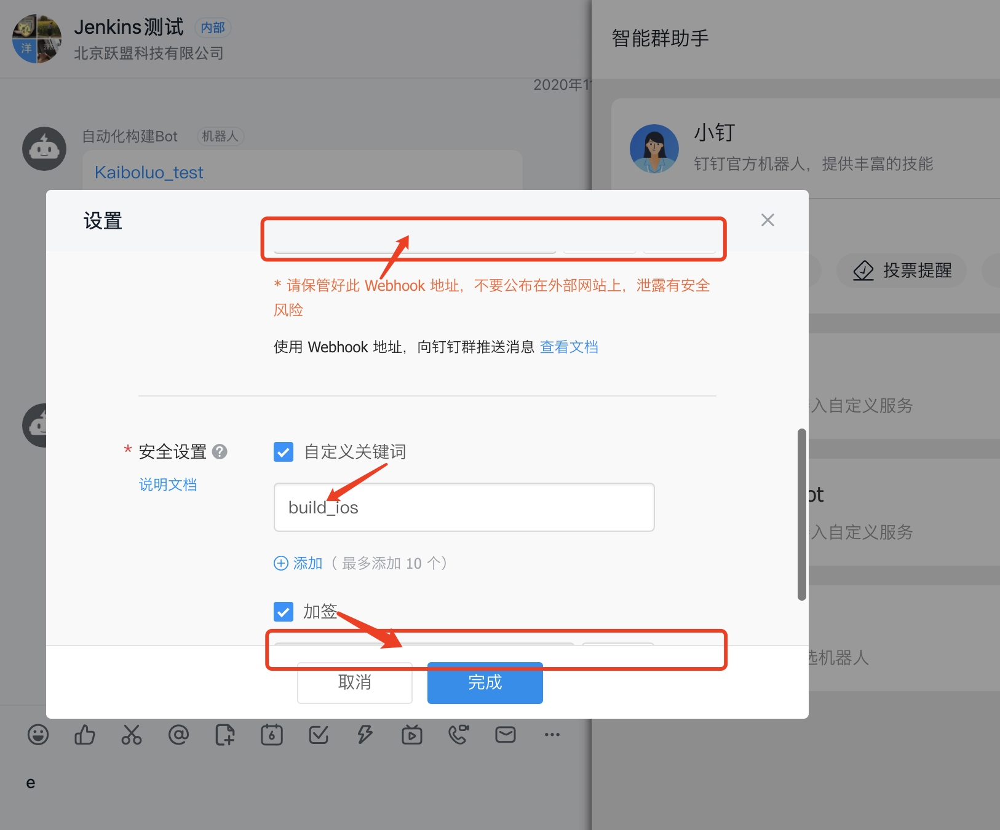
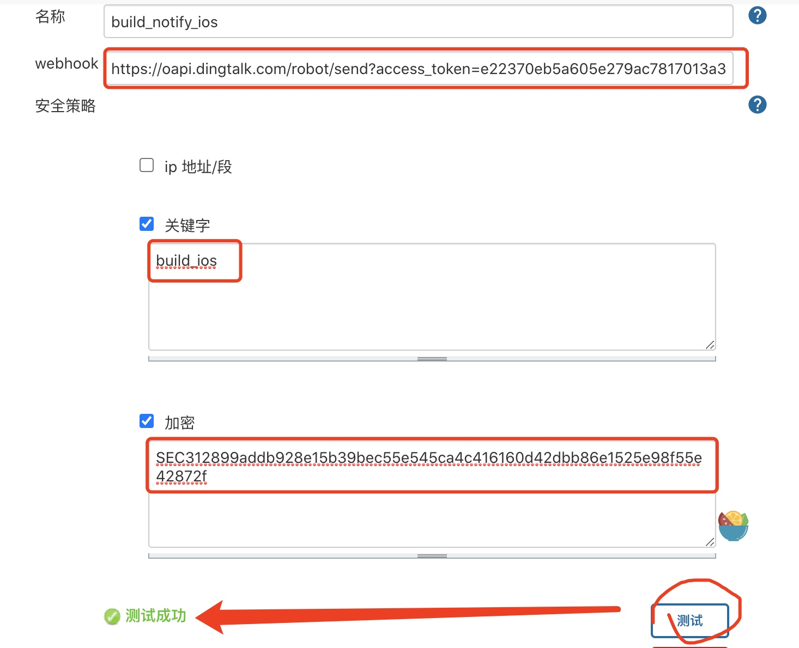
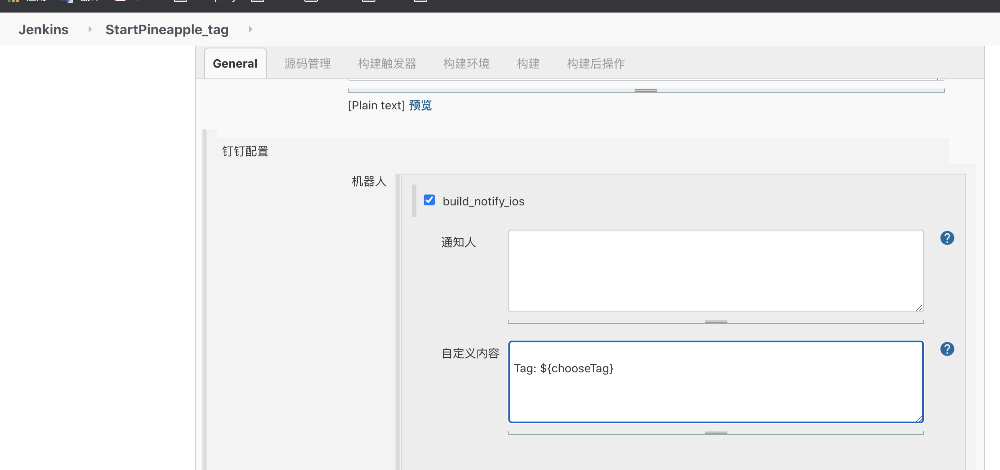
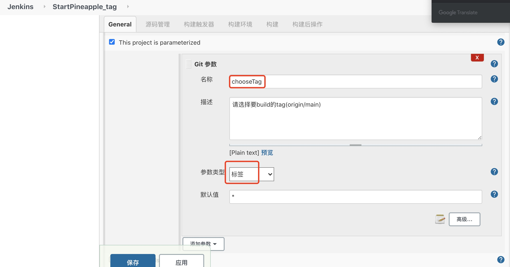
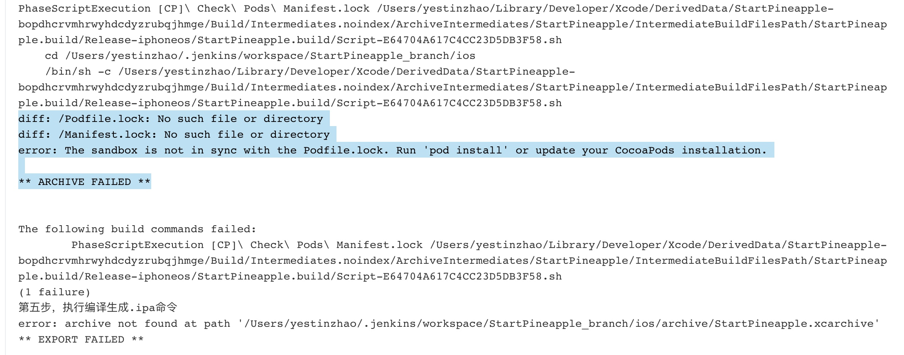
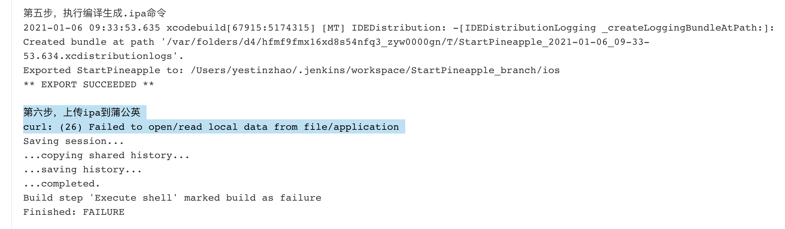

从0到1用Jenkins实现对RN项目一键打包、发布
By yestin
Jenkins for iOS（第二次搭建记录）
运行环境搭建（简略版）
- 下载 jenkins.war jdk8
- 运行jenkins
首次设置账户信息（备忘） 账户: admin 密码: admin
建Job & 配置
建第一个Job
 
设置Git
- 添加git 地址
- 添加ssh凭据【注意】
- 账号：生成ssh时的邮箱(~/.ssh/id_rsa.pub 最末尾可见）
- 密码：ssh秘钥（取于 ~/.ssh/id_rsa）
配置 脚本

#!/bin/bash -il
echo 'Hi, start building ...'
pwd
whoami
export LANG=en_US.UTF-8
export LANGUAGE=en_US.UTF-8
export LC_ALL=en_US.UTF-8
#工程环境路径
workspace_path=.
#项目名称
project_name=myApp
#ipa 所存放的文件夹
ipaPath="ipa"
echo "第一步，更新库文件"
yarn
cd ios
/usr/local/bin/pod install --verbose --no-repo-update
echo "第二步，清除缓存文件...................."
xcodebuild clean
rm -rf archive
rm -f $ipaPath/$project_name.ipa
echo "第三步，设置打包环境，准备开始打ipa包...................."
#sed -i '' 's/\app-store\<\/string\>/\ad-hoc\<\/string\>/' archieveOpt.plist
#sed -i '' 's/ProvisioningStyle = Automatic;/ProvisioningStyle = Manual;/' $project_name.xcodeproj/project.pbxproj
echo "第四步，执行编译生成.app命令"
#解决main.jsbundle找不到的问题
yarn build:ios
xcodebuild archive -workspace $project_name.xcworkspace -scheme $project_name -configuration Release -archivePath archive/$project_name.xcarchive #CODE_SIGN_IDENTITY="iPhone Distribution: Beijing Maihuo Technology Co., Ltd. (HFNWKQ65UU)" PROVISIONING_PROFILE_SPECIFIER="093cc99a-e0ce-47fb-a14d-ba1a0f5a290d.mobileprovision"
echo "第五步，执行编译生成.ipa命令"
xcodebuild -exportArchive -exportOptionsPlist archieveOpt.plist -archivePath archive/$project_name.xcarchive -exportPath $ipaPath -configuration Release
#改名 “我的应用.ipa” 为 "myApp.ipa"
mv ${ipaPath}/*.ipa ${ipaPath}/${project_name}.ipa
echo "第六步，上传ipa到蒲公英"
curl -F "file=@${ipaPath}/${project_name}.ipa" -F "uKey=get_uKey_from_pgyer" -F "_api_key=get_api_key_from_pgyer" https://www.pgyer.com/apiv1/app/upload
其中，脚本的最后部分是 上传蒲公英。参照蒲公英官网教程获取 get_uKey_from_pgyer，get_api_key_from_pgyer 去吧。
到这里就可以结束了。当然，如果定制更多功能，优化流程，可以继续看下去。
配置 钉钉通知
参考: Jenkins配置钉钉通知

按照👆钉钉群里机器人的设置，挨个配置到jenkins的钉钉通知插件里👇 
然后，对某个Job添加 钉钉通知👇 
配置 build前选择tag
安装 Git Parameter插件

然后往Job里设置 
最后，可以愉快的使用了，简单傻瓜式点击，即可实现 拉取对应tag代码、打包、上传到蒲公英，并且通知到钉钉群了。

错误记录
Q：两个Job首次在jenkins执行build，均出现 打包失败

diff: /Podfile.lock: No such file or directory
diff: /Manifest.lock: No such file or directory
error: The sandbox is not in sync with the Podfile.lock. Run 'pod install' or update your CocoaPods installation.
** ARCHIVE FAILED **
R: 通过ios/Pods/ 可以发现，三方库不全。往往需要多试几次，才能集成完。 A: 第二次执行build，就ok了
Q：上传蒲公英失败

curl: (26) Failed to open/read local data from file/application
Action:
去 /用户/yestin/.jenkins/workspace目录下，发现ios/下的ipa文件名是 我的应用.ipa，并不是myApp.ipa，莫非是这个影响？
果然就是。因为xcodebuild -exportArchive不支持直接对ipa包命名，可能要结合Xcode某个设置。
A: 先找简单方法解决吧👇，命令 更改文件名
#改名 “我的应用.ipa” 为 "myApp.ipa"
mv ${ipaPath}/*.ipa ${ipaPath}/${project_name}.ipa
echo "第六步，上传ipa到蒲公英"
curl -F "file=@${ipaPath}/${project_name}.ipa" -F "uKey=e2ff6a115f6763483e2559741d20e06f" -F "_api_key=3352a89fc193379c982ae1ad51444103" https://www.pgyer.com/apiv1/app/upload
其它
这哥们 提供了较详细的脚本，要做的更复杂可以参考下~